MultiVariate (Dynamic) Generalized Additive Models


The mvgam 📦 fits Bayesian Dynamic Generalized Additive Models (DGAMs). A DGAM combines nonlinear predictor effects, latent variables and multivariate time series models in one state-space model. mvgam builds each model from brms and mgcv components and estimates its parameters in Stan. The models it fits include:
- Multivariate state-space time series models
- Vector autoregressions
- Continuous-time autoregressions for irregularly sampled series
- Dynamic factor models
- Hierarchical N-mixture and occupancy models
- Hierarchical generalized additive models
- Joint species distribution models
To choose a model, ?mvgam_families matches each response type to an observation family. ?trend_constructors describes each latent process and when it suits.
Installation
Install the released version from CRAN with install.packages("mvgam"), or the development version with devtools::install_github("nicholasjclark/mvgam"). mvgam also needs a working installation of Stan through rstan or cmdstanr.

A state-space model of rodent captures
The portal_data from the Portal Project hold monthly counts of baited captures for four desert rodent species, with minimum temperature and a 12-month moving average of NDVI (see ?portal_data). mvgam_data() checks that the data suit an observation family and plots each series:
data(portal_data)
mvgam_data(portal_data, y = "captures", family = poisson())
#> ✔ Data check passed for family 'poisson (link = log)'.
#> • series: 4 levels
#> • time: 1 to 80
#> • n obs: 320 (68 NA)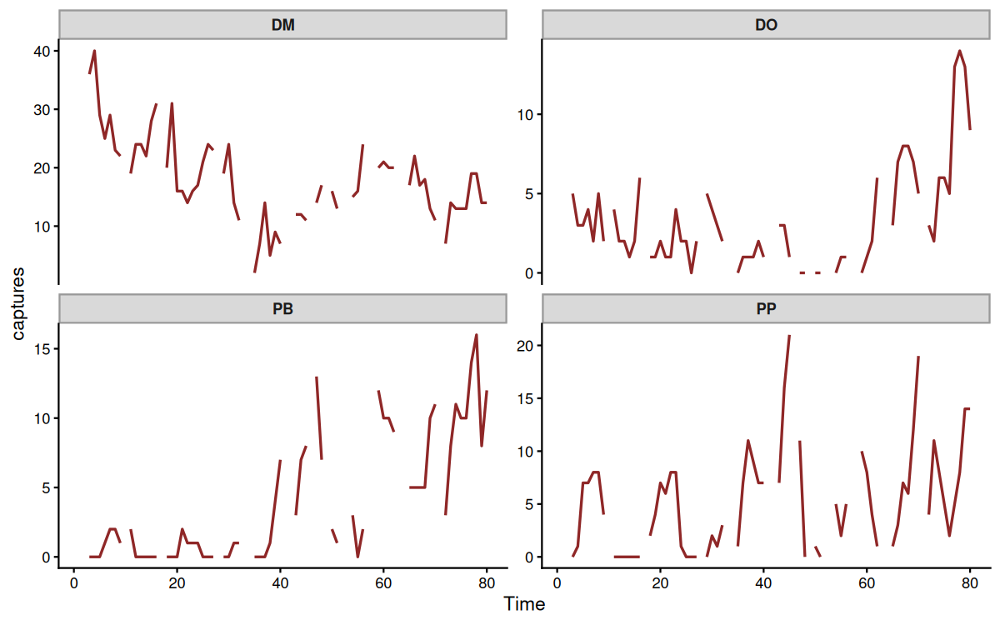
The counts have missing values, many zeros, seasonality and autocorrelation. To test forecasts against data the model has not seen, we held out months 61 to 65:
data_train <- subset(portal_data, time <= 60)
data_test <- subset(portal_data, time > 60 & time <= 65)To estimate how temperature and vegetation drive each species’ abundance, we fitted a state-space GAM. Each species takes its own intercept in the observation model. Each species’ latent abundance takes its own smooth of minimum temperature, a smooth of NDVI shared by all four species and first-order autoregressive dynamics. AR(cor = TRUE) lets the four processes share correlated shocks:
mod <- mvgam(
captures ~ series,
trend_formula = ~ s(mintemp, k = 5, by = lv_axis()) +
s(ndvi_ma12, k = 5) +
AR(cor = TRUE),
data = data_train,
family = poisson(),
chains = 4, cores = 4, silent = 2
)
#> Warning: 78 of 4000 (2.0%) transitions ended with a divergence.
#> See https://mc-stan.org/misc/warnings for details.
summary(mod)
#> Family: poisson
#> Links: mu = log
#> Formula: captures ~ series
#> Data: data_train (Number of observations: 240)
#> Series: 4
#> Trends: AR(1); formula: ~s(mintemp, k = 5, by = lv_axis()) + s(ndvi_ma12, k = 5)
#> Draws: 4 chains, each with iter = 2000; warmup = 1000; thin = 1;
#> total post-warmup draws = 4000
#>
#> == Observation Model ==
#> Regression Coefficients:
#> Estimate Est.Error l-95% CI u-95% CI Rhat Bulk_ESS Tail_ESS
#> Intercept 2.87 0.30 2.30 3.46 1.00 1688 1313
#> seriesDO -2.45 0.54 -3.69 -1.48 1.00 1838 1444
#> seriesPB -3.00 1.13 -5.06 -0.76 1.00 1382 1114
#> seriesPP -2.17 0.50 -3.22 -1.23 1.00 1759 1805
#>
#> == Trend Model ==
#> Smoothing Spline Hyperparameters:
#> Estimate Est.Error l-95% CI u-95% CI Rhat Bulk_ESS
#> sds(smintempseriesDM_1) 0.66 0.71 0.02 2.68 1.00 2195
#> sds(smintempseriesDO_1) 1.22 1.14 0.04 4.31 1.00 2256
#> sds(smintempseriesPB_1) 2.76 2.03 0.16 7.76 1.00 1924
#> sds(smintempseriesPP_1) 1.60 1.46 0.06 5.26 1.00 2860
#> sds(sndvi_ma12_1) 0.92 0.96 0.03 3.47 1.00 2672
#> Tail_ESS
#> sds(smintempseriesDM_1) 2098
#> sds(smintempseriesDO_1) 2004
#> sds(smintempseriesPB_1) 2108
#> sds(smintempseriesPP_1) 2419
#> sds(sndvi_ma12_1) 2356
#>
#> Regression Coefficients:
#> Estimate Est.Error l-95% CI u-95% CI Rhat Bulk_ESS Tail_ESS
#> smintemp:seriesDM_1 -0.83 0.94 -2.89 1.12 1.00 2853 2143
#> smintemp:seriesDO_1 -0.30 2.22 -5.17 3.76 1.00 2419 1671
#> smintemp:seriesPB_1 1.39 4.22 -8.17 8.27 1.00 2290 1693
#> smintemp:seriesPP_1 5.51 2.97 0.30 12.39 1.00 2777 2100
#> sndvi_ma12_1 0.92 1.18 -1.46 3.50 1.00 3372 2451
#>
#> Trend Specific Parameters:
#> Estimate Est.Error l-95% CI u-95% CI Rhat Bulk_ESS Tail_ESS
#> sigma_trend[DM] 0.18 0.05 0.10 0.28 1.00 1792 2217
#> sigma_trend[DO] 0.31 0.15 0.08 0.64 1.00 1201 1597
#> sigma_trend[PB] 0.55 0.17 0.27 0.91 1.00 2213 3035
#> sigma_trend[PP] 0.78 0.16 0.51 1.15 1.00 2047 2577
#> ar1_trend[DM] 0.88 0.07 0.71 0.99 1.00 1390 1661
#> ar1_trend[DO] 0.74 0.30 -0.15 0.99 1.00 1072 1432
#> ar1_trend[PB] 0.89 0.07 0.72 0.99 1.00 1561 1547
#> ar1_trend[PP] 0.67 0.12 0.39 0.89 1.00 2101 2014
#>
#> Draws were sampled using sampling(NUTS). For each parameter, Bulk_ESS
#> and Tail_ESS are effective sample size measures, and Rhat is the potential
#> scale reduction factor on split chains (at convergence, Rhat = 1).
#>
#> Next steps:
#> - `pp_check(fit)`: posterior predictive checks
#> - `residual_cor(fit)`: implied cross-series correlations
#> - `forecast(fit, newdata = ...)`: out-of-sample forecasts
#> - `lfo_cv(fit)`: leave-future-out model comparison
#> - `conditional_effects(fit)`: covariate effects
#> Use `how_to_cite(fit)` for a methods paragraph and `methods_md(fit)` for its equations.conditional_effects() plots the smooths on the scale of the latent process:
conditional_effects(mod)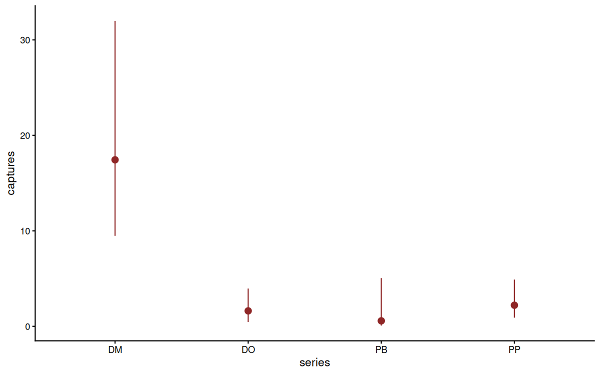
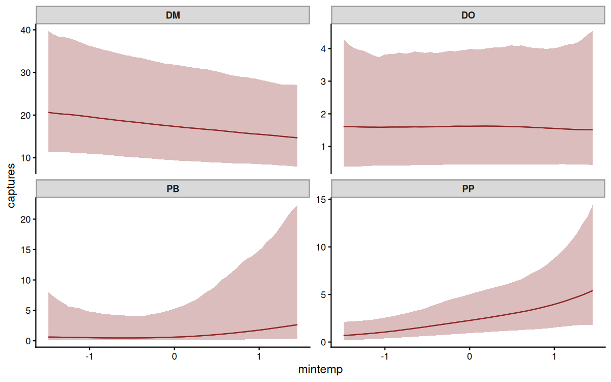
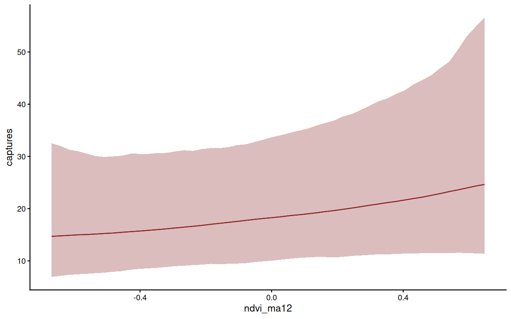
forecast() continues each latent process through the five held-out months. The plot sets the forecasts against the held-out counts:
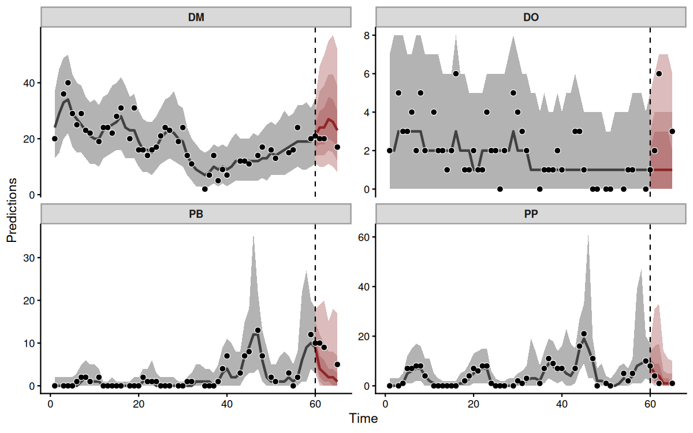
score() and compare_scores() evaluate forecasts with proper scoring rules. The forecast evaluation article compares models by their forecasts.
Randomised quantile residuals plotted over time show any structure the model missed:
pp_check(mod, type = "resid_ribbon_grouped", group = "series",
x = "time", ndraws = 200)
#> Observations with a missing response are omitted from the plot.
#> This message is displayed once per session.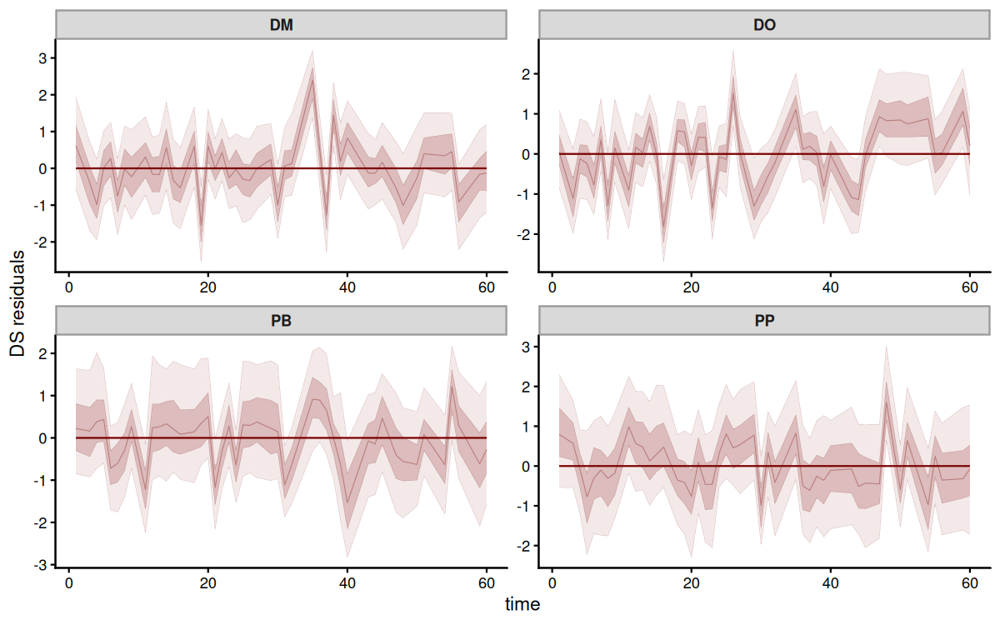
Vector autoregressions
A vector autoregression (VAR) lets each latent process depend on the lagged values of every process. To show what mvgam recovers from such a system, we simulated monthly counts of a prey species and its predator over ten years. Predators suppress the prey a month later. Prey in turn raise the predators a month later:
set.seed(2025)
n_months <- 120
# Rows hold this month's processes, columns last month's
A <- rbind(prey = c(0.6, -0.5),
predator = c(0.4, 0.5))
z <- matrix(0, n_months, 2)
for (t in 2:n_months) {
z[t, ] <- A %*% z[t - 1, ] + rnorm(2, sd = 0.35)
}
predator_prey <- data.frame(
time = rep(seq_len(n_months), 2),
series = factor(rep(c("prey", "predator"), each = n_months),
levels = c("prey", "predator")),
y = rpois(2 * n_months, exp(c(2.5 + z[, 1], 1.5 + z[, 2])))
)
mod_var <- mvgam(
y ~ series,
trend_formula = ~ VAR(),
data = predator_prey,
family = poisson(),
chains = 4, cores = 4, silent = 2
)posterior_transition_matrix() summarises the estimated coefficient matrix. Each cell gives the effect of a process last month (column) on a process this month (row):
A_post <- posterior_transition_matrix(mod_var)
plot(A_post)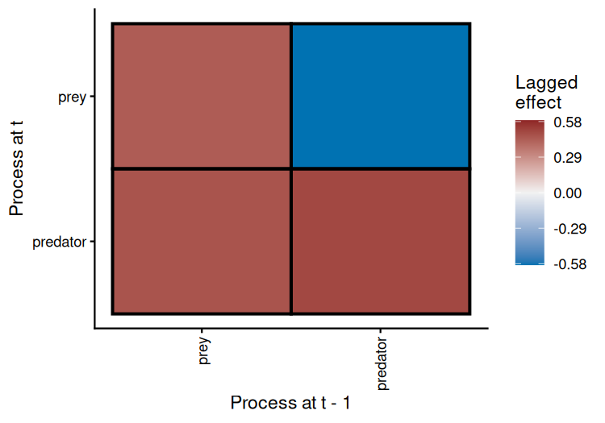
The model recovered the simulated interactions. The predators’ effect on the prey has a posterior mean of -0.59 against a true value of -0.50. The prey’s effect on the predators has a mean of 0.46 against 0.40.
irf() traces how a shock to one process spreads through the system. A shock of one standard deviation to the prey raises the predators, whose response peaks 2 months later at 0.17 on the log scale:
plot(irfs, series = 1)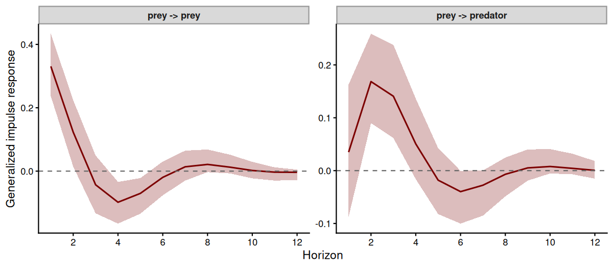
The same shock to the predators lowers the prey, reaching -0.18 after 3 months:
plot(irfs, series = 2)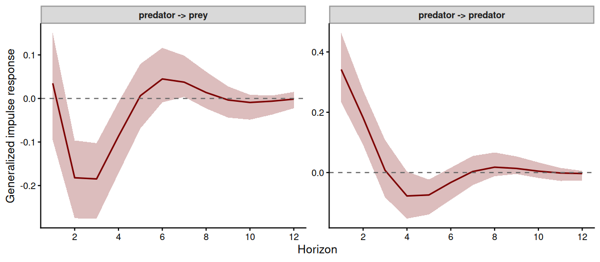
fevd() splits the forecast variance of each process among the shocks that produce it. At a 12-month horizon, shocks to the predators account for 36% of the prey’s forecast variance. Shocks to the prey account for 29% of the predators’ forecast variance:
plot(fevds)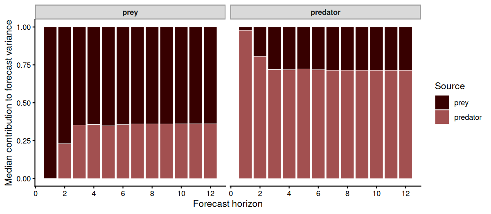
The VAR article covers higher-order and hierarchical VARs.
Describing a fitted model
A fitted model combines published methods: an observation family, a trend model, priors and a sampler. how_to_cite() drafts a methods paragraph for the model and lists the references for each part:
how_to_cite(mod)
#> Methods text skeleton
#> We used the R package mvgam (version 2.0.0; Clark & Wells, 2023) to
#> construct, fit and interrogate the model. mvgam fits Bayesian
#> state-space models that combine flexible predictor effects in both the
#> process and observation components, using functionality from the brms
#> (Burkner 2017) and mgcv (Wood 2017) packages. Observations followed the
#> poisson family with a log link. The latent process followed AR(1)
#> dynamics with correlated innovations. The mvgam-constructed model and
#> data were passed to Stan (Carpenter et al. 2017) via the cmdstanr
#> interface (Gabry et al. 2024). We ran 4 Hamiltonian Monte Carlo chains
#> for 1000 warmup iterations and 1000 sampling iterations. Rank-normalised
#> split Rhat and effective sample sizes (Vehtari et al. 2021) were used to
#> monitor convergence.
#>
#> Primary references
#> Burkner PC (2017). brms: An R Package for Bayesian Multilevel Models
#> Using Stan. Journal of Statistical Software, 80(1), 1-28.
#> https://doi.org/10.18637/jss.v080.i01
#> Carpenter B, Gelman A, Hoffman MD, Lee D, Goodrich B, Betancourt M,
#> Brubaker M, Guo J, Li P and Riddell A (2017). Stan: A probabilistic
#> programming language. Journal of Statistical Software, 76(1), 1-32.
#> https://doi.org/10.18637/jss.v076.i01
#> Clark NJ and Wells K (2023). Dynamic Generalized Additive Models (DGAMs)
#> for forecasting discrete ecological time series. Methods in Ecology and
#> Evolution, 14(3), 771-784. https://doi.org/10.1111/2041-210X.13974
#> Gabry J, Cesnovar R, Johnson A and Bronder S (2024). cmdstanr: R
#> Interface to 'CmdStan'. https://mc-stan.org/cmdstanr/
#> Vehtari A, Gelman A, Simpson D, Carpenter B and Burkner P (2021).
#> Rank-normalization, folding, and localization: An improved Rhat for
#> assessing convergence of MCMC. Bayesian Analysis, 16(2), 667-718.
#> https://doi.org/10.1214/20-BA1221
#> Wood SN (2017). Generalized Additive Models: An Introduction with R (2nd
#> edition). Chapman and Hall/CRC.
#>
#> Other useful references
#> Arel-Bundock V, Greifer N and Heiss A (2024). How to interpret
#> statistical models using marginaleffects for R and Python. Journal of
#> Statistical Software, 111(9), 1-32.
#> https://doi.org/10.18637/jss.v111.i09
#> Burkner PC, Gabry J and Vehtari A (2020). Approximate leave-future-out
#> cross-validation for Bayesian time series models. Journal of Statistical
#> Computation and Simulation, 90(14), 2499-2523.
#> https://doi.org/10.1080/00949655.2020.1783262
#> Gabry J, Simpson D, Vehtari A, Betancourt M and Gelman A (2019).
#> Visualization in Bayesian workflow. Journal of the Royal Statistical
#> Society: Series A (Statistics in Society), 182(2), 389-402.
#> https://doi.org/10.1111/rssa.12378
#> Vehtari A, Gelman A and Gabry J (2017). Practical Bayesian model
#> evaluation using leave-one-out cross-validation and WAIC. Statistics and
#> Computing, 27(5), 1413-1432. https://doi.org/10.1007/s11222-016-9696-4
#>
#> Use `bibtex(x)` for a BibTeX block ready for your .bib file.bibtex() writes those references to a .bib file. methods_md() writes the model as Markdown equations with a glossary of symbols and the priors, ready for a methods section or an appendix:
The equations methods_md(mod) writes for the rodent model
Data
: non-negative integer counts
observations, series, time points
Predictors:
- : continuous covariate
- : continuous covariate
Model
where:
- indexes series, indexes time
- : conditional mean of
- : population intercept
- : difference between level and reference level of
- : difference between level and reference level of
- : difference between level and reference level of
- : latent state at series time
- : trend predictor from ‘trend_formula’
- : thin plate regression spline in , stratified by , basis size , smoothing SD
- : thin plate regression spline in , basis size , smoothing SD
- : process innovations at time , covariance , with the vector of SDs
- : correlation matrix of the innovations
- : autoregressive coefficient at lag
Observation families
mvgam began as a tool for forecasting ecological counts. Its observation families now span most of the response types met in ecological and environmental monitoring.
For continuous responses:
-
gaussian()for real-valued data -
student()for real-valued data with heavy tails -
lognormal()andGamma()for strictly positive data -
exponential()for waiting times -
Beta()for proportions on(0, 1) -
tweedie()for positive continuous data carrying an exact mass at zero, such as catch per unit effort or rainfall
For counts and binary outcomes:
-
poisson()for equidispersed counts -
negbinomial()for overdispersed counts -
beta_nb()for counts whose tails run heavier than a negative binomial can reach -
bernoulli()for binary data -
binomial()andbeta_binomial()for counts with a known number of trials -
com_binomial()for bounded counts that are under-, over- or super-dispersed relative to a binomial
A further group of families operates on closure units, where several rows of the data share a single latent state. mvgam groups the rows of a unit by their series and time values. Replicate visits to a site and the species of one assemblage then need no reshaping:
-
nmix()for repeat counts of an unknown abundance seen with imperfect detection -
occ()for repeat detection and non-detection visits to a site of unknown occupancy -
multi()anddiri()for compositional counts and proportions that sum within a unit -
categ()for a single categorical outcome per unit -
mvn()andmvt()for continuous multi-species responses with a low-rank residual covariance, the latter permitting heavier tails
?mvgam_families lists the full set, grouped by the kind of response each one suits. To show a Beta model, we simulated proportions for three series. Each series has a smooth covariate effect and its own autoregressive trend:
set.seed(100)
beta_data <- sim_mvgam(
family = Beta(),
n_series = 3L,
n_timepoints = 80L,
trend_model = AR(),
prop_trend = 0.5
)
mvgam_data(beta_data$data_train, y = "y", family = Beta())
#> ✔ Data check passed for family 'beta (link = logit)'.
#> • series: 3 levels
#> • time: 1 to 60
#> • n obs: 180 (0 NA)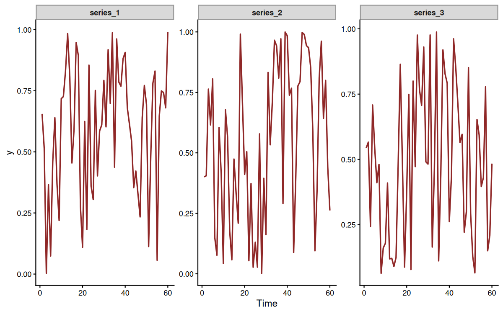
mod_beta <- mvgam(
y ~ s(x, by = series, k = 6),
trend_formula = ~ AR(p = 1),
data = beta_data$data_train,
newdata = beta_data$data_test,
family = Beta(),
chains = 4, cores = 4, silent = 2
)
#> Warning: 3 of 4 chains had an E-BFMI less than 0.3.
#> See https://mc-stan.org/misc/warnings for details.The posterior holds an estimate of the Beta precision parameter for each series:
summary(mod_beta)
#> Family: beta
#> Links: mu = logit; phi = log
#> Formula: y ~ s(x, by = series, k = 6)
#> Data: beta_data$data_train (Number of observations: 180)
#> Series: 3
#> Trends: AR(1)
#> Draws: 4 chains, each with iter = 2000; warmup = 1000; thin = 1;
#> total post-warmup draws = 4000
#>
#> == Observation Model ==
#> Smoothing Spline Hyperparameters:
#> Estimate Est.Error l-95% CI u-95% CI Rhat Bulk_ESS
#> sds(sxseriesseries_1_1) 4.64 2.34 1.62 10.61 1.00 1182
#> sds(sxseriesseries_2_1) 5.99 2.63 2.59 12.75 1.00 1367
#> sds(sxseriesseries_3_1) 8.91 3.57 4.00 17.34 1.00 990
#> Tail_ESS
#> sds(sxseriesseries_1_1) 2095
#> sds(sxseriesseries_2_1) 1941
#> sds(sxseriesseries_3_1) 1870
#>
#> Regression Coefficients:
#> Estimate Est.Error l-95% CI u-95% CI Rhat Bulk_ESS Tail_ESS
#> Intercept 0.19 0.18 -0.14 0.55 1.01 673 1640
#> sx:seriesseries_1_1 9.81 7.22 -1.64 26.26 1.00 1004 1322
#> sx:seriesseries_2_1 13.86 5.50 3.92 25.48 1.00 1570 2213
#> sx:seriesseries_3_1 22.72 6.54 10.44 35.53 1.00 1214 1762
#>
#> Further Distributional Parameters:
#> Estimate Est.Error l-95% CI u-95% CI Rhat Bulk_ESS Tail_ESS
#> phi 10.98 5.04 5.10 24.38 1.06 71 270
#>
#> == Trend Model ==
#> Trend Specific Parameters:
#> Estimate Est.Error l-95% CI u-95% CI Rhat Bulk_ESS
#> sigma_trend[series_1] 0.77 0.22 0.34 1.18 1.04 114
#> sigma_trend[series_2] 0.84 0.20 0.47 1.26 1.04 124
#> sigma_trend[series_3] 0.48 0.20 0.05 0.86 1.04 112
#> ar1_trend[series_1] 0.55 0.21 0.11 0.91 1.01 324
#> ar1_trend[series_2] 0.69 0.12 0.43 0.90 1.01 677
#> ar1_trend[series_3] 0.53 0.29 -0.23 0.92 1.01 606
#> Tail_ESS
#> sigma_trend[series_1] 601
#> sigma_trend[series_2] 642
#> sigma_trend[series_3] 351
#> ar1_trend[series_1] 788
#> ar1_trend[series_2] 1723
#> ar1_trend[series_3] 547
#>
#> Draws were sampled using sampling(NUTS). For each parameter, Bulk_ESS
#> and Tail_ESS are effective sample size measures, and Rhat is the potential
#> scale reduction factor on split chains (at convergence, Rhat = 1).
#>
#> Next steps:
#> - `pp_check(fit)`: posterior predictive checks
#> - `forecast(fit, newdata = ...)`: out-of-sample forecasts
#> - `lfo_cv(fit)`: leave-future-out model comparison
#> - `conditional_effects(fit)`: covariate effects
#> Use `how_to_cite(fit)` for a methods paragraph and `methods_md(fit)` for its equations.The hindcasts and forecasts of each series, against the held-out observations:
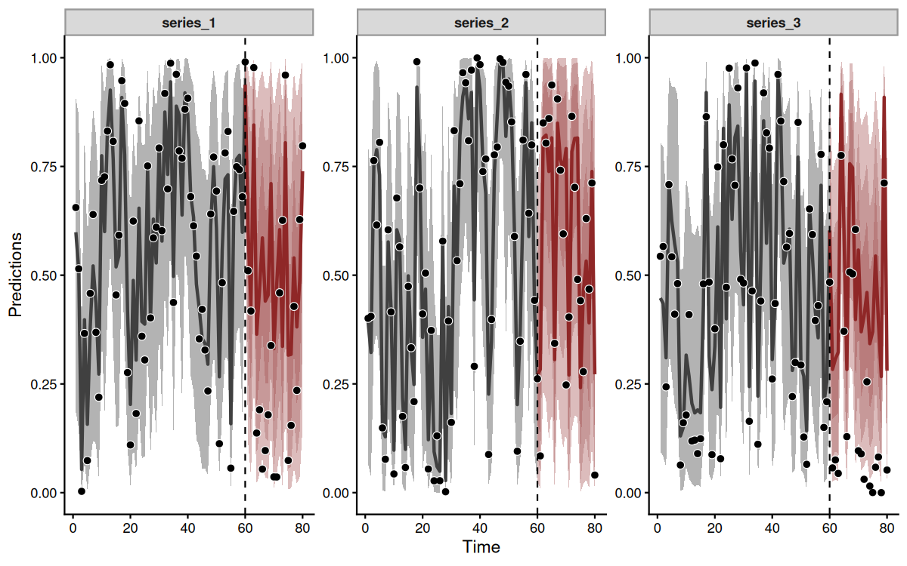
The package documentation covers the other uses of mvgam, among them dynamic and spatially varying coefficients, dynamic factors and joint species distribution models. stancode() and standata() return the Stan program and data of any model for users who wish to adapt it. The Stan Discourse is a helpful place to troubleshoot.
Citing mvgam and related software
Research software is written and maintained by people whose only currency is citation. If mvgam contributed to an analysis, please cite it and the packages it depends on. A ⭐ on the repository is welcome too.
When using mvgam, please cite the following:
Clark, N.J. and Wells, K. (2023). Dynamic Generalized Additive Models (DGAMs) for forecasting discrete ecological time series. Methods in Ecology and Evolution. DOI: https://doi.org/10.1111/2041-210X.13974
As mvgam acts as an interface to Stan, please additionally cite:
Carpenter B., Gelman A., Hoffman M. D., Lee D., Goodrich B., Betancourt M., Brubaker M., Guo J., Li P., and Riddell A. (2017). Stan: A probabilistic programming language. Journal of Statistical Software. 76(1). DOI: https://doi.org/10.18637/jss.v076.i01
how_to_cite(mod) lists the further references for the family, trend model and sampler of a fitted model.
Getting help
Bug reports belong on the issue tracker. A minimal reproducible example makes a report fixable. Questions about model syntax, priors or interpretation are better suited to the mvgam Discussion Board, where an earlier thread has often covered the same ground already. The Changelog records what changed in each release.
Other resources
The package website holds articles on data formatting, forecasting and several extended case studies. Further examples, including step-by-step introductory webinars:
- Time series in R and Stan using the
mvgampackage - Ecological Forecasting with Dynamic Generalized Additive Models
- Distributed lags (and hierarchical distributed lags) using
mgcvandmvgam - State-Space Vector Autoregressions in
mvgam - Ecological Forecasting with Dynamic GAMs; a tutorial and detailed case study
- Incorporating time-varying seasonality in forecast models
Interested in contributing?
I’m actively seeking PhD students and other researchers to work in the areas of ecological forecasting, multivariate model evaluation and development of mvgam. Please reach out if you are interested (n.clark’at’uq.edu.au). Other contributions are also very welcome. The Contributor Instructions give general guidelines. By participating in this project you agree to abide by the terms of its Contributor Code of Conduct.